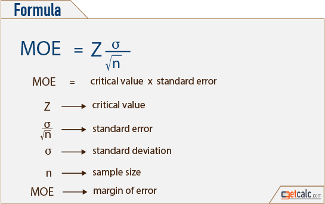
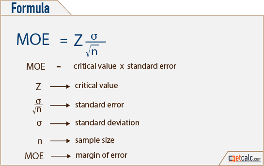

Margin of Error: Definition, How to Calculate in Easy Steps
Contents:
1. What is a Margin of Error?
2. How to Calculate Margin of Error (video)
3. Margin of Error for a Proportion
1. What is a Margin of Error?
2. How to Calculate Margin of Error (video)
3. Margin of Error for a Proportion
